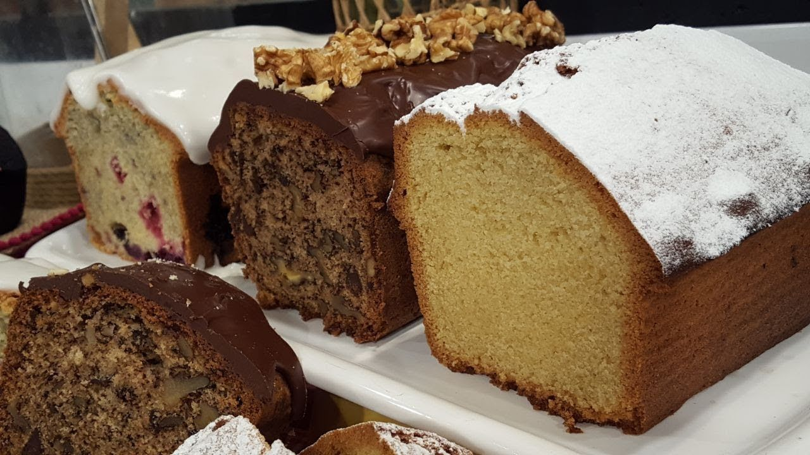
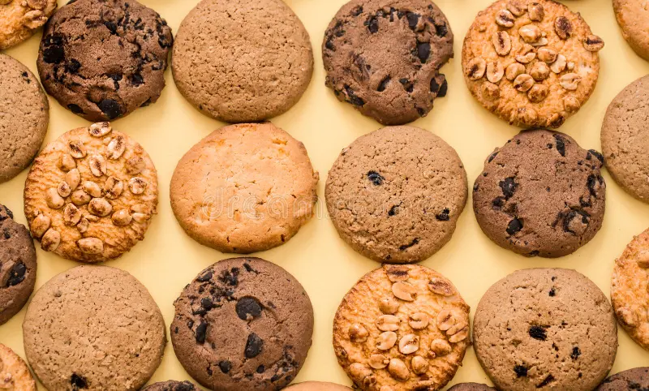

Budines ricos
Clásico y húmedo, con mucho sabor a chocolate. Tiempo aproximado: 50 min.
Elegí una categoría y comenzá a cocinar.

Clásico y húmedo, con mucho sabor a chocolate. Tiempo aproximado: 50 min.

Crunchy y sabrosas, ideales para compartir. Tiempo aproximado: 20 min.

Deliciosas y esponjosas, ideales para celebraciones. Tiempo aproximado: 60 min.

Deliciosos y cremosos, ideales para terminar una comida. Tiempo aproximado: 30 min.